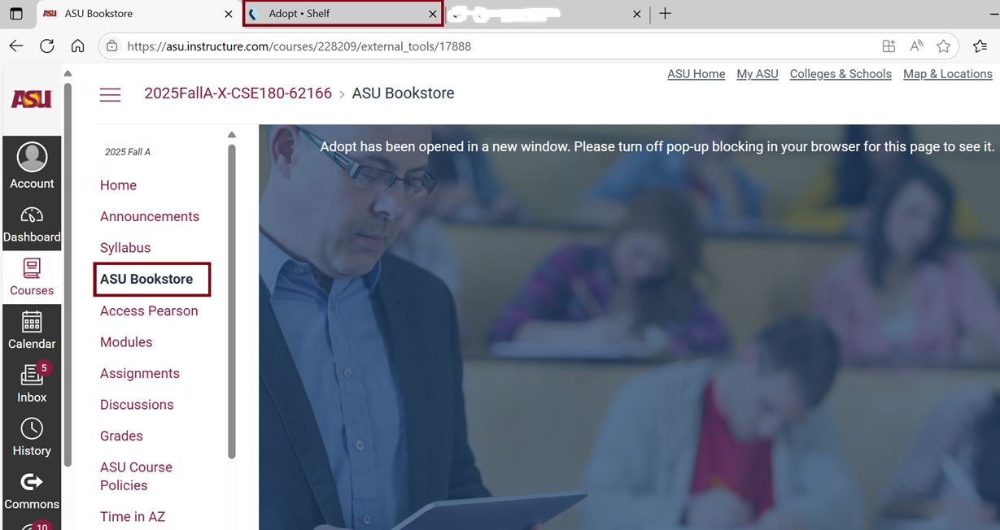
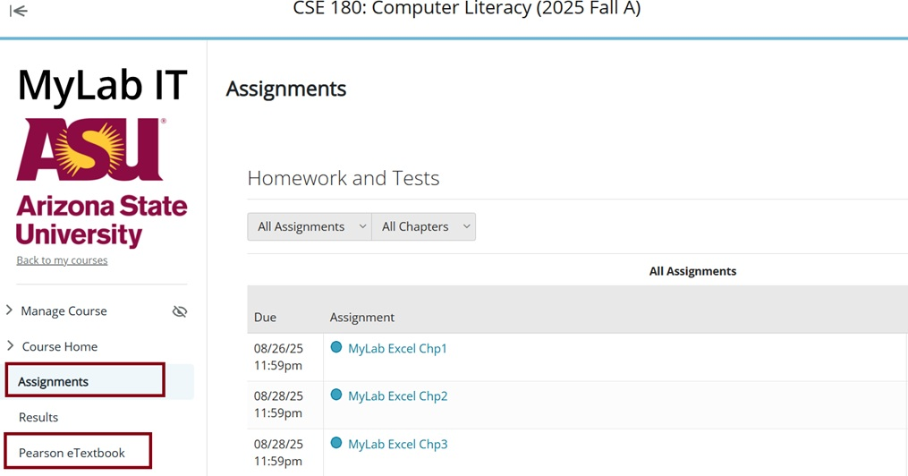

Step #1)
Go to
https://my.asu.edu, enter your ASURITE ID (for example mine is
xfeng13) and password to login. Next under “My Classes”, pick the right
semester and click on “Computer Literacy” (hyperlinked) to go to the course
Canvas website.
Step #2)
Once inside the Canvas shell, from the left-hand side control panel, click on
“ASU Bookstore”, then click on the title (or "Redshelf") “MyLab IT for Office 2021:
Skills for Success Series + Technology in Action, 18e” to generate a unique
access code, copy and paste the access code.
Step #3)
Next, inside the same Canvas shell, from the left-hand side control panel, click
on “Pearson Access”, go through the Pearson registration and login procedure,
enter the access code your copied from above step #2 during the procedure.

Step #4) In Step #3, after clicking on Access Pearson, a new window will open. From there, you can view and complete your assignments, as well as read the eTextbook, by using the menu on the left-hand side (see below).

updated on 8/26/2025 @Sherry Feng